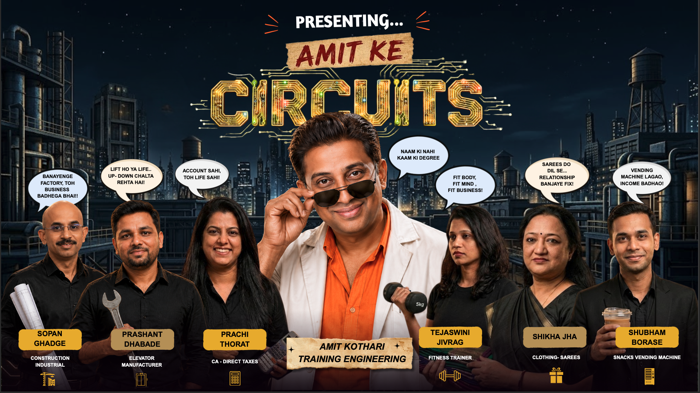

⚡Amit Ke Circuits
IMAGE AR EXPERIENCE
Scan Poster
For Magic
Existing coaster/presentation image ko camera mein lao. Image detect hote hi vertical AR video start hoga.

1Allow camera access.
2Coaster ya slide ki image square frame mein lao.
3Image detect hote hi video start hoga.